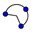
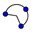

The Graphics View shows the graphical representation of mathematical objects (e. g., points, vectors, segments, polygons, functions, curves, straight lines, conic sections). Whenever the mouse is moved over one of these objects a description appears as a roll-over text and the object is highlighted.
There are several tools/modes to tell GeoGebra how it should
react to mouse input in the Graphics View (see section Construction
Tools). For example, clicking on the drawing pad can create
a new point (see tool  New Point), intersect two objects (see tool  Intersect Two Objects), or create a
circle (see
New Point), intersect two objects (see tool  Intersect Two Objects), or create a
circle (see  Circle tools).
Circle tools).